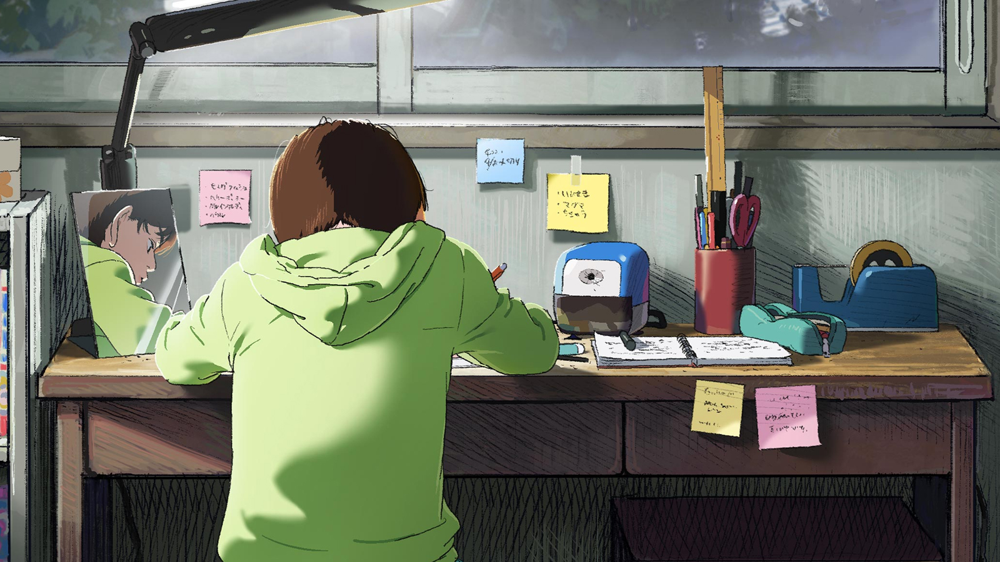

Chainsaw Man - The Movie: Reze Arc
Quase um ano após a exibição do último episódio da primeira temporada,
os fãs de Chainsaw Man receberam uma novidade bem animadora durante a
Jump Festa 2024. O arco posterior ao confronto entre Denji e Katana Man será
adaptado em filme pelo MAPPA Studio e contará com a estreia de Reze,
personagem amada pelos fãs do mangá de Tatsuki Fujimoto.
Postagem 2

Se você é fã de Chainsaw Man e Fire Punch, temos uma ótima notícia para você: o one-shot
Look Back, de Tatsuki Fujimoto, vai virar um filme de anime! Isso mesmo, a obra que foi
publicada na revista Shonen Jump+ em julho de 2021 vai ganhar uma adaptação animada que
promete emocionar os fãs. O filme será produzido pelo estúdio Mappa, o mesmo de Jujutsu Kaisen e
Attack on Titan: The Final Season.